Many food cultures already have a shape for a balanced meal
MyPlate draws a healthy meal as one plate split into fruits, vegetables, grains, and protein, with a cup of dairy on the side. A lot of food cultures already have their own shape for the same idea. In South India it is a banana leaf or a thali full of small bowls. In Vietnam it is a tray of shared dishes around the rice. In Japan it is one soup and three dishes.
For each room I found a photo of a real, everyday meal and mapped every dish on it to a MyPlate food group. Each dish has a numbered dot in its group's color, and the list under the photo explains it. Press Sort onto MyPlate and the dishes lift off the photo and land where MyPlate would put them.
FruitsWhole fruit, or 100% fruit juice.
VegetablesIncludes potatoes and seaweed. Beans and lentils can count here or under protein.
GrainsRice, roti, bread, and noodles. Whole grains keep the bran and germ.
Protein foodsFish, meat, eggs, tofu, nuts, and beans or lentils.
DairyMilk, yogurt, cheese, and fortified soy milk or soy yogurt.
ExtrasMy own label for pickles, sauces, and sweets. They add flavor but don't fill a food group.
Room I · Andhra Pradesh, India
భోజనంBhojanam
A full meal on a banana leaf
Bhojanam is the Telugu word for a meal. In Andhra Pradesh, the everyday lunch is a mound of rice with a lineup of small dishes around it, and it is often served on a banana leaf. Andhra Pradesh Tourism describes the usual order: rice with a dry curry (koora) first, then pappu (dal), then chaaru (rasam) and pulusu (sambar), and last perugu (curd).
Ayurveda holds that an ideal meal has all six tastes: sweet, sour, salty, pungent, bitter, and astringent. A spread of many small dishes like this one makes that possible, and it also spreads the meal across food groups. This meal is fully vegetarian.
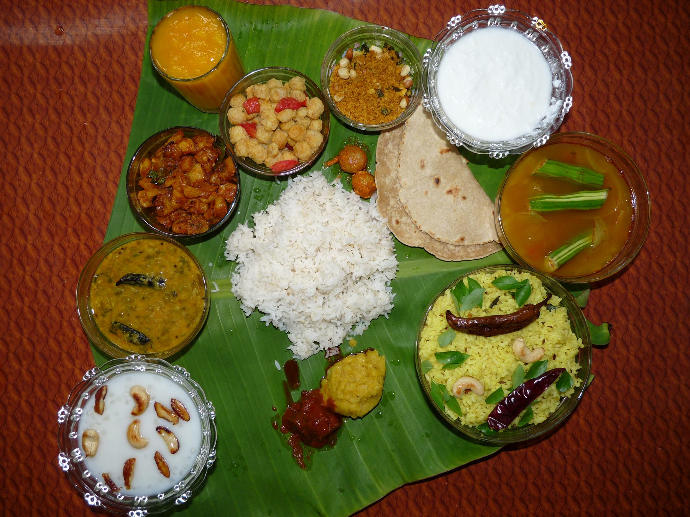
Tap a numbered dot to see what the dish is.
On the plate: 1 fruit, 2 vegetables, 3 grains, 3 protein foods, 1 dairy food, and 4 extras.
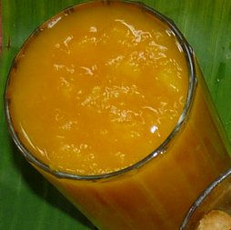
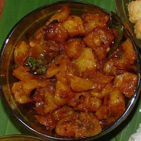
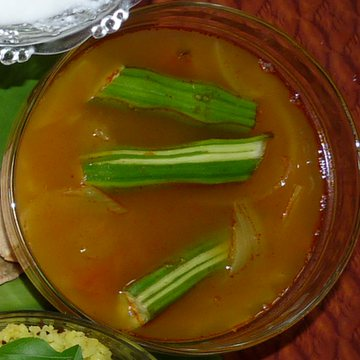
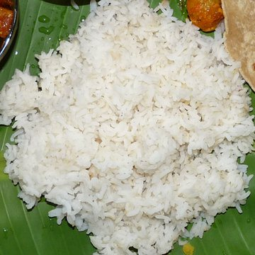
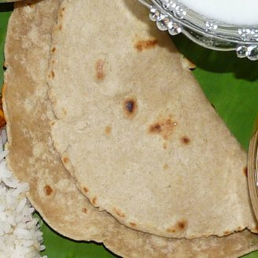
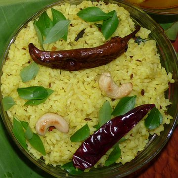
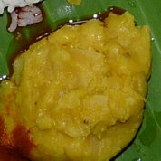
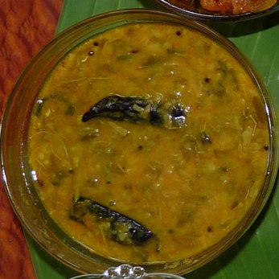
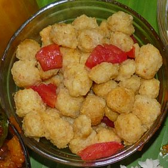
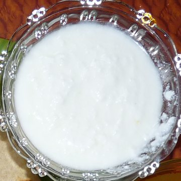
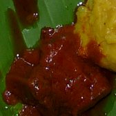
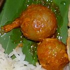
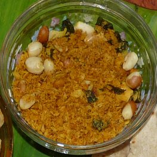
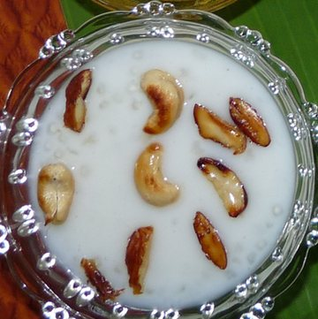
What's on the leaf
Fruits
1
Mango juice
Juice from naturally ripened mangoes. MyPlate counts 100% fruit juice as fruit, but it recommends whole fruit most of the time.
Vegetables
2
Aloo curry
A dry potato curry, the koora of this meal. Potatoes count as a starchy vegetable.
3
Sambar
A tamarind and toor dal stew with drumsticks (moringa pods). The drumsticks count as vegetables and the dal counts as protein, so one bowl covers two groups.
Grains
4
Annamఅన్నం
Plain white rice in the middle of the leaf. The other dishes get mixed into it a little at a time. White rice is a refined grain.
5
Roti
Flatbread, usually made from whole wheat flour (atta). Whole wheat roti counts as a whole grain.
6
Lemon rice
Rice tossed with lemon juice, turmeric, curry leaves, dried red chilies, and cashews.
Protein
7
Pappuపప్పు
Plain dal, meant to be mixed into the rice. MyPlate lets lentils count as protein or as a vegetable.
8
Chinta chiguru pappu
Dal cooked with tender tamarind leaves, which give it a sour taste. The leaves add a little to the vegetable group too.
9
Soya chunk salad
Cooked soy chunks tossed with tomato. Soy counts as a protein food, which gives this vegetarian meal three protein dishes.
Dairy
10
Peruguపెరుగు
Plain curd (yogurt). An Andhra lunch usually ends with curd mixed into the last of the rice.
Extras
11
Avakayaఆవకాయ
The well known Andhra pickle made from raw mango, mustard, chili, and oil. A small spoon adds a lot of salt.
12
Amla pickle
Whole Indian gooseberries (usirikaya) pickled with salt and spice. It started as fruit, but the salt makes it an extra.
13
Coconut and peanut podi
A dry powder of fried grated coconut and peanuts, sprinkled over rice. It is mostly flavor, with a little protein from the peanuts.
14
Sabudana payasam
A sweet pudding of tapioca pearls cooked in milk and topped with fried cashews. It has milk in it, but the added sugar puts it with the extras.
Already on the leaf
All five food groups show up. Rice, roti, and lemon rice are the grains. Pappu, the tamarind leaf dal, and the soya chunks bring protein without any meat. Curd covers dairy, the mango juice counts as fruit, and the potatoes and drumsticks are the vegetables.
Worth knowing
MyPlate lets beans and lentils count as protein or as a vegetable, so dal can fill either spot. Ghee, which often goes over the rice and dal, is a fat like butter and does not count as dairy. The pickles and podi are strong and salty, so a little goes a long way.
Same meal, small change
Roti made with whole wheat atta already counts as a whole grain. Swapping some of the white rice for a millet like ragi or jowar would add more, and India's own 2024 guidelines ask for at least half of cereals to be whole grains such as millets. A whole mango or banana after the meal gives more fiber than the juice.
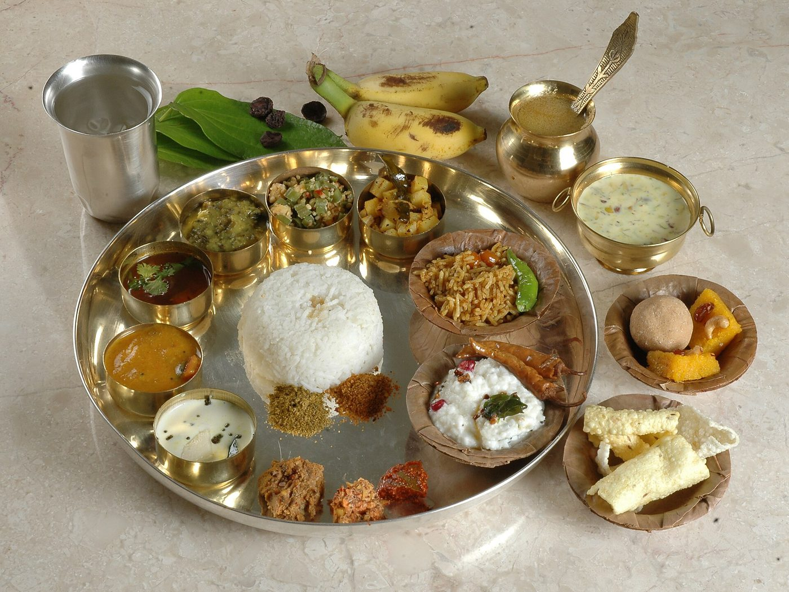
Also in this room
The same shape on a metal thali
Rice sits in the middle, small bowls (katoris) line the rim, and bananas and sweets wait beside the plate. It is a different table with different dishes, but the idea is the same: one grain in the center and many small helpings around it.
Vegetarian Andhra Meal · Photograph by PriyaBooks · CC BY 2.0
Room II · Vietnam
Mâm cơm
A family tray of shared dishes
Mâm cơm means a tray of rice, and it is how a Vietnamese family meal is served. The dishes are set out together, rice comes from a shared pot, and everyone eats from their own bowl while reaching into the shared dishes with chopsticks.
The Southern Women's Museum in Ho Chi Minh City describes the everyday meal as a shared pot of rice, a shared bowl of dipping sauce, and three basic dishes: a savory protein dish (món mặn), a vegetable dish, and a soup (canh). This tray has the dipping sauce and all three dishes, with tofu as a second protein and an empty bowl waiting for rice from the pot. The photographer calls it a modern daily Vietnamese meal.
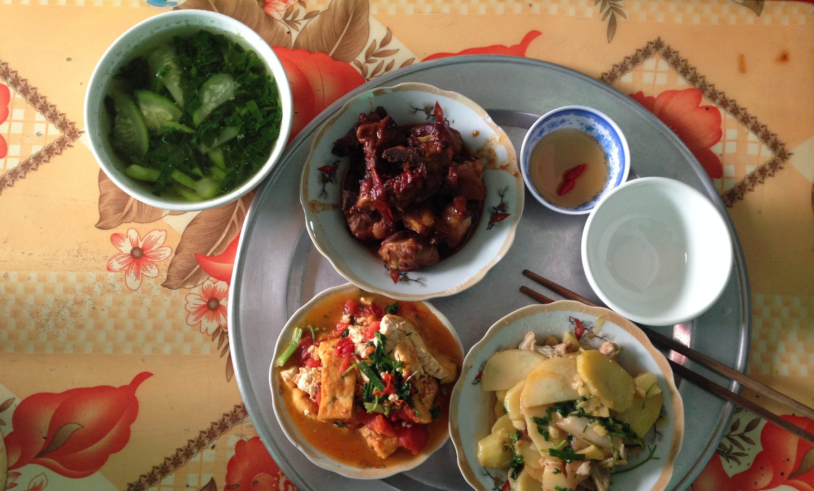
Tap a numbered dot to see what the dish is.
On the plate: no fruit, 2 vegetables, 1 grain, 2 protein foods, no dairy, and 1 extra.
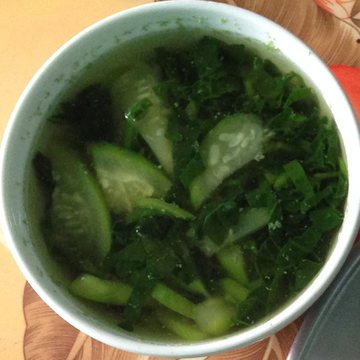
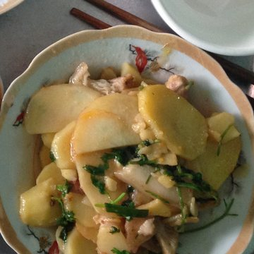
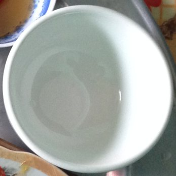
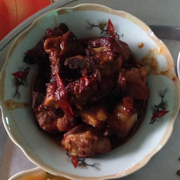
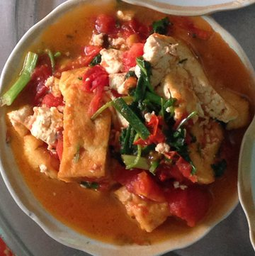
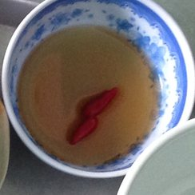
What's on the tray
Fruits
Nothing from this group on the tray.
Vegetables
1
Canh
A light soup of Malabar spinach (mồng tơi) and bottle gourd (bầu). Canh is the soup dish, one of the three basic parts of the meal.
2
Khoai tây xào
Stir fried potatoes with herbs and what look like a few thin slices of meat. Potatoes count as a starchy vegetable.
Grains
3
Cơm
This empty bowl is for rice from the shared pot. Each person eats from their own bowl and reaches for the shared dishes with chopsticks.
Protein
4
Sườn xào chua ngọt
Sweet and sour pork ribs, the món mặn (savory main dish) of this tray.
5
Đậu phụ sốt cà chua
Fried tofu simmered in tomato sauce with scallions. Tofu is a protein food, and the tomato adds a vegetable.
Dairy
Nothing from this group on the tray.
Extras
6
Nước mắm
Fish sauce with sliced red chili, shared for dipping. One tablespoon of fish sauce has about 1,413 mg of sodium.
Already on the tray
Grains, vegetables, and protein. Rice is the grain, even though the one bowl in the photo is still empty. The soup, potatoes, and tomato are the vegetables, and the pork ribs and tofu are the protein. The everyday pattern of rice, a soup, a vegetable dish, and a savory dish lines up closely with how MyPlate splits a meal.
Worth knowing
There is no fruit or dairy on this tray, and the missing dairy is not surprising. MedlinePlus Genetics says adult lactose intolerance is most common in people of East Asian descent, affecting 70 to 100 percent of people in those communities. The saltiest thing here is the little bowl of nước mắm: one tablespoon of fish sauce has about 1,413 mg of sodium, more than half of the 2,300 mg daily limit.
Same meal, small change
Fruit is the easy one, and the second tray below already has watermelon on it. For dairy, calcium fortified soy milk (sữa đậu nành) counts in MyPlate's dairy group, and tofu made with calcium adds calcium even though it counts as protein. Brown rice (gạo lứt) works in the same bowl as white rice.
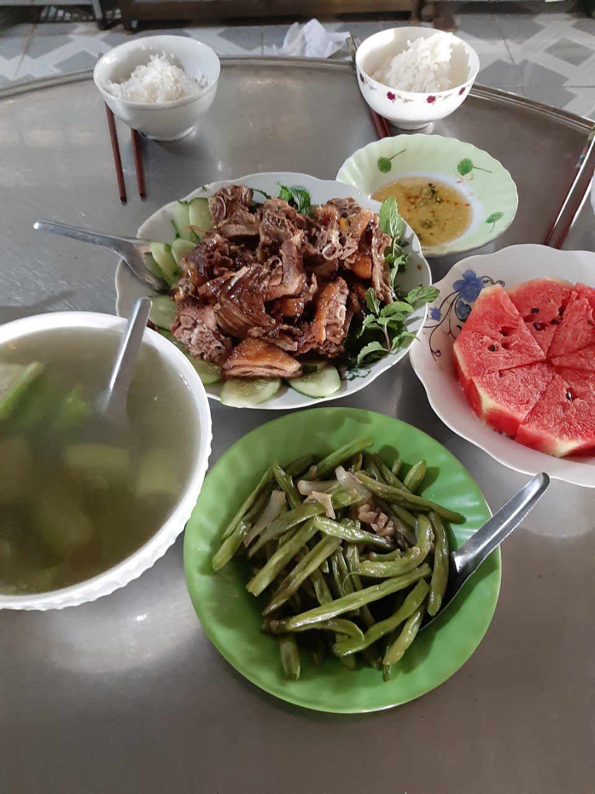
Also in this room
Another family, the same tray, plus fruit
Braised duck (vịt khìa) on cucumber and mint, cucumber soup (canh dưa leo), stir fried green beans (đậu que xào), fish sauce, bowls of rice, and a plate of watermelon. Same shape as the first tray: rice, a soup, a vegetable, and a savory dish, with fruit filling one of the gaps.
Vietnamese family daily meal · Photograph by Baoothersks · CC BY-SA 4.0
Room III · Japan
一汁三菜Ichijū sansai
One soup, three dishes
Ichijū sansai means one soup and three dishes. Along with rice and usually pickles, it is the classic pattern for a Japanese home meal: one main dish and two sides. Japan's Ministry of Agriculture, Forestry and Fisheries even describes where everything goes: rice front left, soup front right, the main dish back right, a simmered side back left, and a small side in the middle.
Washoku, Japan's traditional food culture, was added to UNESCO's list of Intangible Cultural Heritage in December 2013. The photographer labeled this as an everyday family dinner in the ichijū sansai style, with a fourth dish.
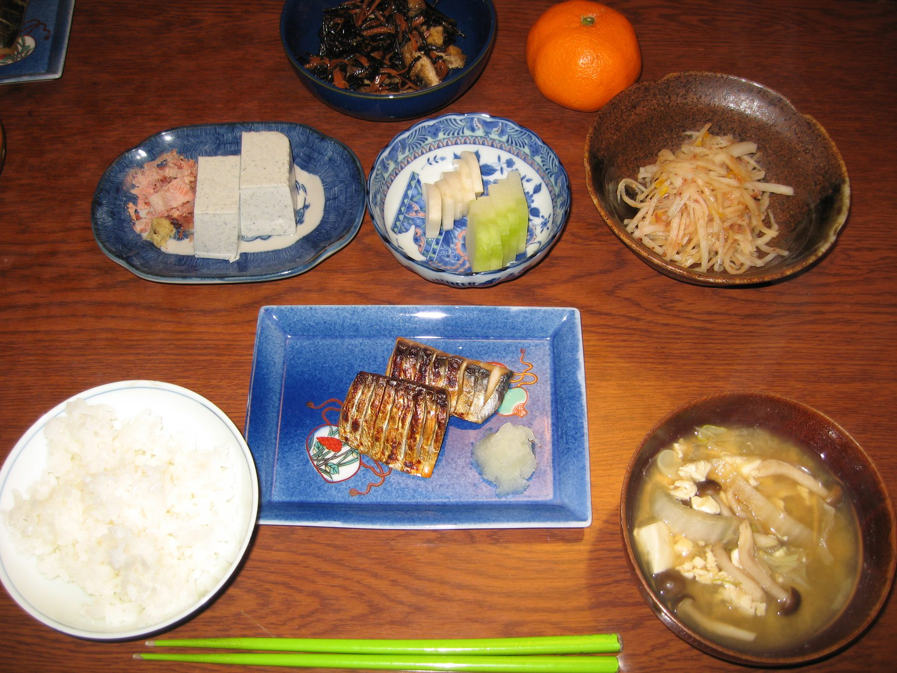
Tap a numbered dot to see what the dish is.
On the plate: 1 fruit, 3 vegetables, 1 grain, 2 protein foods, no dairy, and 1 extra.
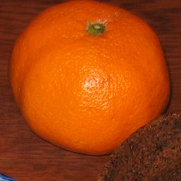
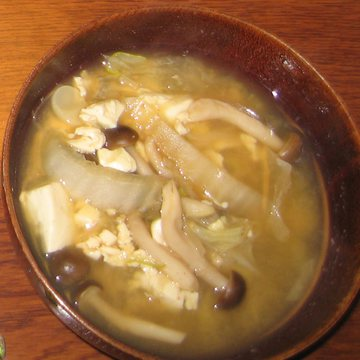
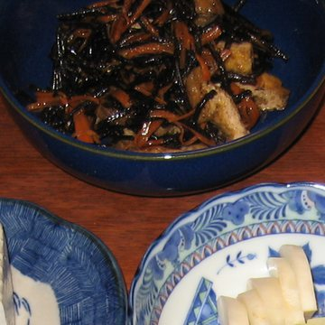
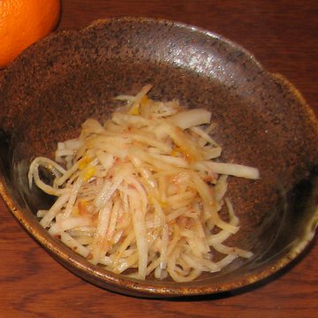
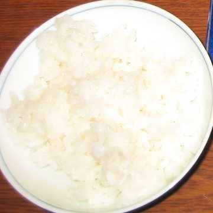
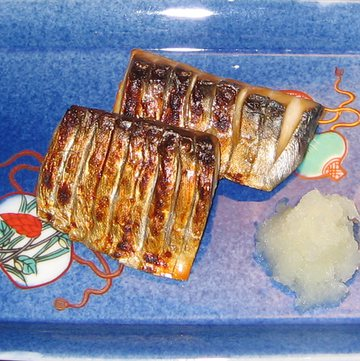
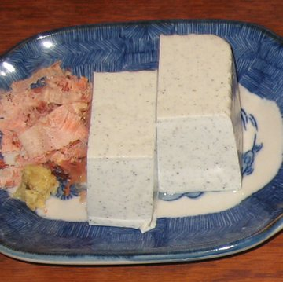
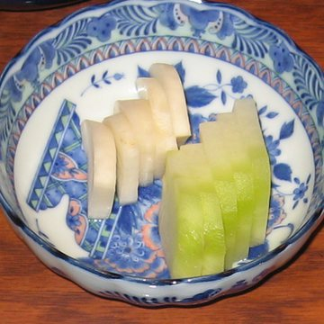
What's on the table
Fruits
1
Mikanみかん
A satsuma mandarin sitting off to the side, a classic winter fruit in Japan.
Vegetables
2
Misoshiru味噌汁
Miso soup with tofu, shimeji mushrooms, and vegetables. It is the one soup in ichijū sansai. Miso has about 634 mg of sodium per tablespoon.
3
Hijiki no nimonoひじきの煮物
Hijiki seaweed simmered with carrot and fried tofu. The Dietary Guidelines count seaweed as a vegetable.
4
Daikon side dish大根
Shredded daikon, a mild white radish, served as a small side dish.
Grains
5
Gohanご飯
A bowl of white rice at the front left, exactly where the traditional layout puts it. Genmai (brown rice) would make it a whole grain.
Protein
6
Yakizakana焼き魚
Grilled mackerel (saba) with grated daikon. This is the main dish. Mackerel is an oily fish with omega-3 fats and vitamin D.
7
Hiyayakko冷奴
Chilled tofu topped with bonito flakes and grated ginger. Tofu is a protein food, and tofu made with calcium is also a good calcium source.
Dairy
Nothing from this group on the table.
Extras
8
Tsukemono漬物
Pickled vegetables, eaten with rice. They are vegetables, but the salt makes them an extra.
Already on the table
Four of the five groups. Rice is the grain, the mackerel and tofu are the protein, the miso soup, hijiki, and daikon are the vegetables, and the mikan is the fruit. Only dairy is missing.
Worth knowing
Dairy is not part of traditional washoku, but milk is part of school lunch (kyūshoku) today. Japan's education ministry defines a complete school lunch as rice or bread, milk, and side dishes, and in May 2023 it was served at 98.8 percent of elementary schools. The Dietary Guidelines count seaweed like hijiki as a vegetable. Much of the sodium comes from miso, soy sauce, and pickles: miso has about 634 mg per tablespoon and soy sauce about 879 mg.
Same meal, small change
Genmai (brown rice) or rice cooked with mixed grains (zakkokumai) fits the same bowl and adds whole grains. A glass of milk or a cup of yogurt fills the only empty group, and going lighter on soy sauce at the table cuts sodium without changing any dish.
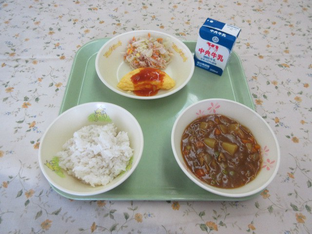
Also in this room
Where the dairy shows up: school lunch
A public school lunch served in Handa, Aichi, on April 18, 2018: rice, a stew, an omelet, a salad, and a carton of milk on one tray. It keeps the pattern of rice with side dishes, and the milk sits off to one side much like MyPlate's cup.
School lunch · Photograph by Handa City (愛知県半田市) · CC BY 4.0
The centerpiece
One plate, three kitchens
This is MyPlate filled only with food from the three rooms, one food from each kitchen in every group. Most circles were cut straight from the photos in the gallery. The soy milk and the school milk come from two extra photos, since the Vietnamese and Japanese meals had no dairy on them.
Show
Fruits
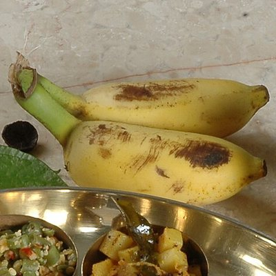
Banana India
Served beside the thali. Potassium, fiber, and vitamin B6.
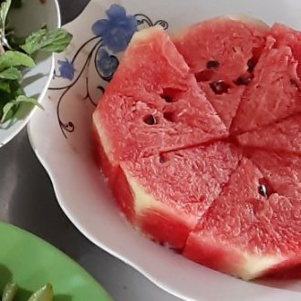
Dưa hấu (watermelon) Vietnam
Cut and ready on a family tray. Vitamin C, lycopene, and a lot of water.
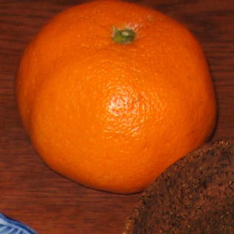
Mikan Japan
A satsuma mandarin. Vitamin C and fiber, and it peels in seconds.
Vegetables
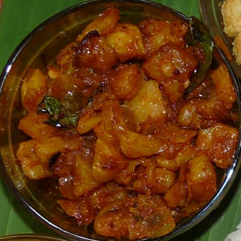
Aloo curry India
Potatoes are a starchy vegetable with potassium, vitamin C, and vitamin B6.
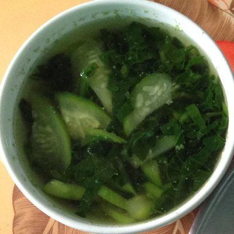
Canh mồng tơiVietnam
Malabar spinach is a leafy green with vitamin A and vitamin C.
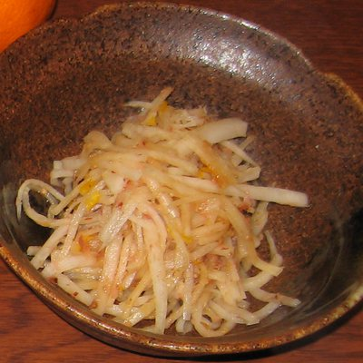
Daikon Japan
A mild radish with vitamin C, fiber, and very few calories.
Grains
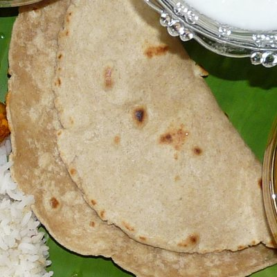
Roti India
Whole wheat roti is a whole grain with fiber, B vitamins, iron, and magnesium.
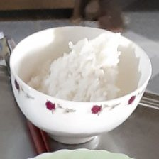
Cơm (rice) Vietnam
White rice is mostly carbohydrate for energy. Gạo lứt (brown rice) keeps the fiber.
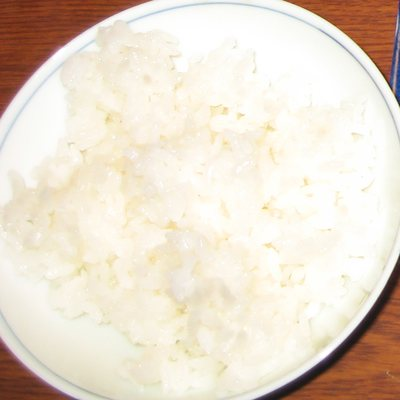
Gohan (rice) Japan
Also white rice. Genmai (brown rice) adds fiber and magnesium.
Protein foods
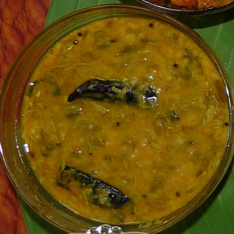
Chinta chiguru pappu India
Lentils bring plant protein, fiber, folate, and iron.
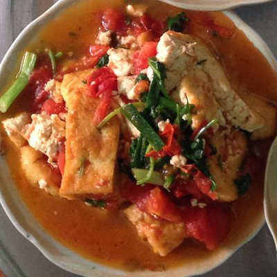
Đậu phụ (tofu) Vietnam
Tofu has protein and iron, plus calcium when it is set with calcium sulfate.
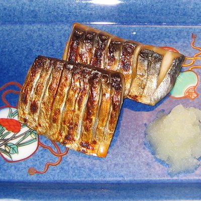
Saba (mackerel) Japan
Protein, omega-3 fats, vitamin D, and vitamin B12.
Dairy
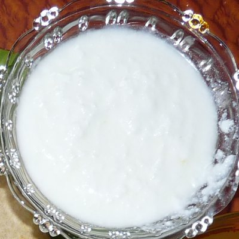
Perugu (curd) India
Calcium, protein, and live cultures.
Sữa đậu nành (soy milk) Vietnam
Protein. MyPlate counts it as dairy only when it is fortified with calcium, which usually adds vitamin D too.
Gyūnyū (milk) Japan
The carton that comes with school lunch. Calcium, protein, and riboflavin.
Down the hall
Other shapes
MyPlate is only one way to draw a balanced meal. Here is how each country in this gallery draws its own, next to the two American versions. These are my own simplified sketches, colored with MyPlate's groups so they can be compared side by side. They are not copies of the official graphics.
United States, 2011
MyPlate
A plate in four parts with a cup of dairy on the side. Half the plate is fruits and vegetables.
United States, 2026
The New Pyramid
Released in January 2026 with the 2025 to 2030 Dietary Guidelines. It turns the old pyramid upside down: protein, dairy, and healthy fats plus vegetables and fruits across the wide top, and whole grains at the narrow point.
India, 2024
My Plate for the Day
From the ICMR National Institute of Nutrition. Vegetables, greens, roots, and fruits make up about half the plate. Cereals and millets come next, then pulses, eggs, and meat, then nuts and oilseeds, with a glass of milk or curd. At least half of the cereals should be whole grains like millets.
Vietnam
Tháp dinh dưỡng
The nutrition pyramid from Vietnam's National Institute of Nutrition. Grains and tubers form the wide base, then vegetables and fruit, then meat, fish, eggs, tofu, and dairy, with limits on salt, sugar, and fat at the tip. In 2025 the institute released a new set of pyramids for different age groups, from young children to older adults.
Japan, 2005
The Spinning Top
From Japan's health and agriculture ministries. Grain dishes are the widest layer at the top, then vegetable dishes, then fish, egg, and meat dishes, with milk and fruit side by side at the point. Water and tea are the axis, exercise keeps it spinning, and snacks are the string.
Findings
What I noticed
Balance comes from many small dishes
None of these meals uses a divided plate, but all three break the meal into small dishes that each do one job, which is really what MyPlate's sections are for. The Andhra leaf has its bowls, the mâm cơm has its soup, vegetable, and savory dish around the rice, and ichijū sansai has its soup and sides.
Fruit and dairy were the gaps
Every meal had rice and at least two protein dishes. Fruit and dairy were the thin spots. Fruit was a glass of mango juice on the Andhra leaf, a mandarin set off to the side in Japan, and nothing on the Vietnamese tray (the second tray did have watermelon). Dairy was even thinner and only showed up on the Andhra leaf, as curd.
Most of the protein came from plants and fish
Dal, soy chunks, tofu, and mackerel did most of the work. The only meat in the three main meals was on the Vietnamese tray. The Andhra meal is fully vegetarian and still has three protein dishes.
Salt hides in the small bowls
The food groups were mostly covered. The thing to watch is sodium, and it sits in the condiments: pickles, fish sauce, miso, and soy sauce. One tablespoon of fish sauce has about 1,413 mg of sodium, which is more than half of the 2,300 mg daily limit.
The fixes already live inside each cuisine
White rice anchors all three meals, and each tradition already has a whole grain version: whole wheat roti and millets in India, gạo lứt in Vietnam, and genmai in Japan. Add fruit after the meal and curd, milk, or fortified soy milk where dairy is missing, and every group is filled without dropping a single traditional dish. Going easier on the pickles and sauces takes care of the salt.
{kind=link}
{kind=link}
{kind=link}
{kind=link}
{kind=link}
{kind=link}
{kind=link}
{kind=link}